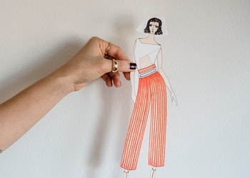

Arte com Material reciclável
A utilização de materiais recicláveis e naturais na produção de brinquedos, artigos de decoração, moda, utensílios e móveis domésticos é a essência do artesanato – arte de transformar e criar produtos únicos com as mãos. Além do aproveitamento estético e prático de diferentes objetos que seriam descartadas na natureza, o artesanato sustentável pode ser uma fonte de renda e realização pessoal.
A profissão de artesão é regulamentada pela Lei 13.180 de 2015, e faz parte da lista de atividades do programa de Microempreendedor Individual (MEI). Assim, quem produz peças de artesanato pode formalizar suas atividades e obter vários benefícios como o direito a aposentadoria do MEI, auxílio doença, auxílio maternidade, redução de impostos e outras vantagens..
|  | |